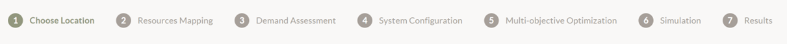

<main>
    <div>
        Welcome to WEFEPlan!<br>
        <p>In this section guidance material for using the WEFEPlan is provided step by step.
        The web app WEFEPlan is still at an early stage. Debugging, testing, and validation are ongoing,
        and feedback from end-user workshops (EUW) will inform future iterations.
        However, the fundamental structure and functionality remain consistent across versions.</p>

        <p>The planning support of integrated WEFE systems for sustainable basic services via the web app WEFEPlan
        is subdivided into seven steps:<br>
        1.	Choose location (Project Description)<br>
        2.	Resource Mapping<br>
        3.	Demand Assessment<br>
        4.	System Layout<br>
        5.	Multi Objective Optimization<br>
        6.	Simulation<br>
        7.	Results</p>

        <p> </p> </p>

<!--        TODO we should probably change that clicking on the top ribbon also saves changes-->
        <p>Each step will ask you to input certain information. The inputs on each page will be saved upon clicking
        the <button class="btn btn-small">Next</button> button, and will be lost if you close the page (or jump between
        steps using the top ribbon).</p>
    </div>
</main>
